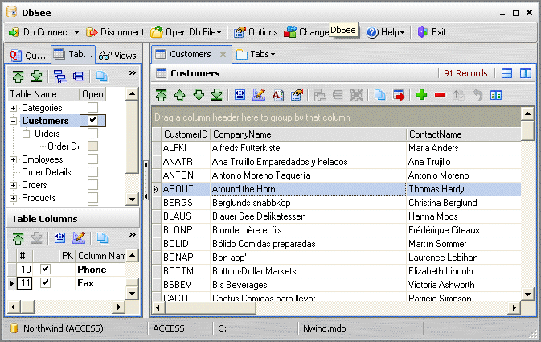
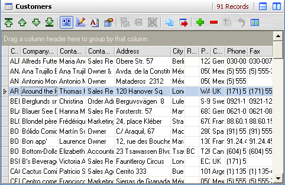

Auto Adjust Column Width
The Auto Adjust Column Width feature allows you to adjust the width of data grid columns so that all columns are visible, in the display area.
Open the Table Customers. As you can see, this table has 11 columns but (due to their width) only 3 columns fit in the display area:

Now click the Auto Adjust Width button on the Grid Toolbar - column widths are now adjusted to fit all columns - you can now resize any of them by dragging the vertical separator line on the Column Headers.
This is a toggle button - clicking on it again will reset column width to previous values.

Created with the Freeware Edition of HelpNDoc: Easily create CHM Help documents